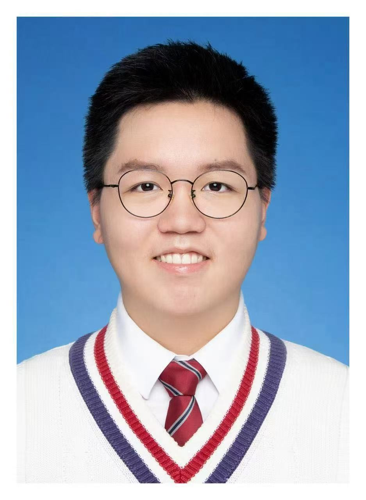

NavProbe
I conceived and led this benchmark for fine-grained evaluation of navigation instructions, designing its architecture, evidence, and Whole–Micro tasks. I also ran the model evaluations and wrote most of the manuscript.
Shanghai Jiao Tong University, China
Undergraduate at the School of Automation and Intelligent Sensing
I study how robots translate language into actions and verify what they accomplish. My current work focuses on navigation, and I’m interested in extending these ideas to closed-loop manipulation.
I plan to apply in fall 2027 for fall 2028 entry, primarily to PhD programs in the United States and Singapore.
As a third-year undergraduate, I took NavProbe from an initial research question to a working benchmark and manuscript, carrying out most of the work independently. I hope it gives you a sense of my initiative and potential as a researcher. If my work aligns with your group, I’d be happy to discuss PhD opportunities.
lighthqg@sjtu.edu.cn
Selected work
I conceived and led this benchmark for fine-grained evaluation of navigation instructions, designing its architecture, evidence, and Whole–Micro tasks. I also ran the model evaluations and wrote most of the manuscript.
In a team of three, I led the dynamics analysis, mechanical design, and 3D printing, and handled roughly half of the coding and testing.
Research directions
My next project will explore closed-loop control for robotic hand manipulation. I’m interested in vision-language-action models, world models, and tactile sensing, and hope to join a lab that values open discussion and offers active mentorship, access to robot hardware, and compute for training models.